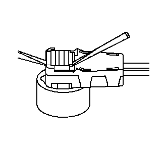
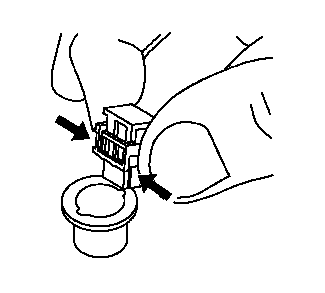
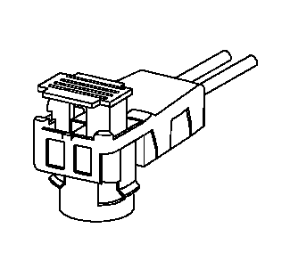
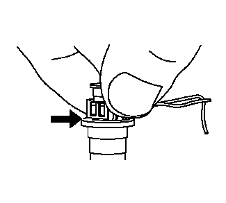
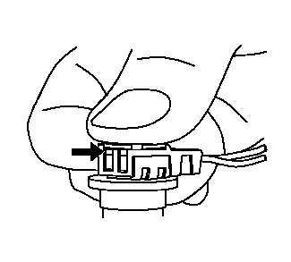

FCI连接器（SIR）
拆卸程序
注意:
必须首先释放橙色或黄色的连接器定位器 (CPA)，以断开或连接连接器。

1.
将橙色或黄色的连接器定位器垂直提升（避免提升时其与连接器成一个倾角）约4毫米，以释放连接器。用一个小平头工具帮助释放连接器定位器。连接器定位器也可手动释放，无需任何工具。

2.
抓住连接器的两端并垂直提升，以断开连接器。
安装程序

1.
安装连接器前，连接器定位器应在黄色罩盖上方约4毫米处。否则，用一个小平头工具帮助释放连接器定位器。连接器定位器也可手动释放，无需任何工具。

2.
按照点火器钥匙槽的顺序，排列连接器钥匙凸舌。抓住连接器的两端并向下推入点火器连接器分总成，直至完全固定。

3.
连接器完全固定后，用拇指向下推压连接器定位器，直到连接器定位器接触到连接器的黄色罩盖。